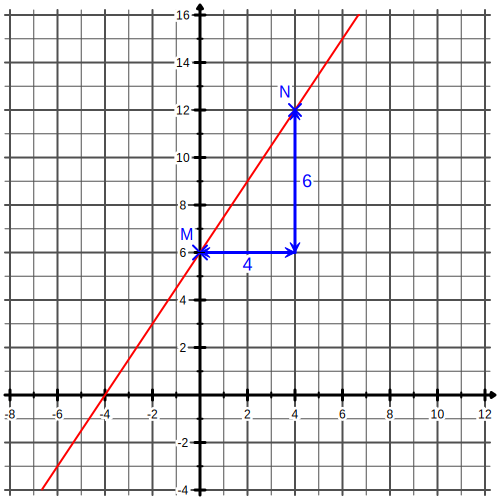

|
Chapitre 17
|
- Fonction affines
|
Activité Introduction
- Soit la fonction $f(x)=1,5x$ :
- Construire en bleu la courbe représentative de $f$
- La courbe de $f$ est une __________ passant par l'origine du repère.
- Soit la fonction $g(x)=1,5x-2$ :
- Construire en rouge la courbe représentative de $g$
- La courbe de $g$ est une __________ parallèle à $f$.
- Quelle est l'ordonnée de $g$ à l'origine du repère ?


Fonction linéaires (rappels) :
Une fonction linéaire est une fonction du
type $\textcolor{#039be5}{a}\times x$ ou $a$
est un nombre quelconque.
Remarques :
- $a$ est appelé le coefficient directeur de la fonction.
- Une fonction linéaire représente une situation de proportionnalité et inversement.
- Une fonction linéaire est une droite passant par l'origine du repère et inversement.
Fonctions affines :
Définition :
Une fonction affine est une fonction du type
$\textcolor{#039be5}{a}\times x + \textcolor{#039be5}{b}$ où
$a$ et $b$
sont des nombres quelconques.
Exemple :
$f(x)=8x+3$ ; $g(x)=-3x-1$ ; $h(x)=8-2x$ ; $i(x)=15x$ ; $j(x) = 32$.
Propriétés :
- Une fonction linéaire est une fonction affine particulière. ($b$ = 0)
- Une fonction affine est une droite non verticale et inversement.
- Si $a$ = 0 on dit que la fonction est constante. C'est alors une droite horizontale.
- Une fonction affine coupe l'axe vertical en ordonnée $b$.
Remarque :
- $a$ est ici aussi appelé le coefficient directeur de la fonction.
Lecture graphique :
Il est possible de retrouver la fonction à partir de la droite dans un repère gradué.

Sur le graphique ci-contre, la droite rouge est une fonction affine.
On peut trouver la valeur de $b$ à partir de la position verticale de la droite à l'origine (l'ordonnée du point M). Ici $b$ = 6.
On peut trouver la valeur de $a$ à partir du déplacement entre deux points de la courbe (ici M et N par exemple). $\textcolor{#039be5}{a} = \frac{6}{4} = 1,5$.
Notre fonction affine est donc $1,5x+6$
Soit M et N deux points de coordonnées respectives ($x_1$ ; $y_1$) et ($x_2$ ; $y_2$) tels que $x_1 \neq x_2$.
Le coefficient directeur de la droite passant par M et N se calcule ainsi :
$\textcolor{#039be5}{a}=\frac{y_1 - y_2}{x_1 - x_2}$
Exemple :
Trouver l'expression de la fonction affine f tel que f(-2) = 1 et f(3) = -5
Rédaction :
On a donc les points M(-2 ; 1) et N(3 ; -5), on calcule le coefficient directeur de la droite passant par M et N :
$a=\frac{1-(-5)}{-2-3}=\frac{6}{-5}=-1,2$
On a donc $f(x)=-1,2x+b$
On peut trouver la valeur de $b$ en utilisant le point M :
$f(-2)=1$ donc $-1,2\times(-2)+b = 1$
Donc $2,4+b=1$ ,donc $b=1-2,4=-1,4$
Donc l'expression de la fonction est $f(x)=-1,2x-1,4$.
Calcul d'un antécédent :
Pour calculer l'antécédent d'un nombre par une fonction affine, on pose l'équation du premier degré.
Exemple :
Calculer l'antécédent de 5 par la fonction $g(x)=2,4x+7$
On pose et résoud donc $2,4x+7=5$.
Donc $2,4x = 5-7= -2$
Donc $x = -2\div 2,4 = \frac{5}{6}$